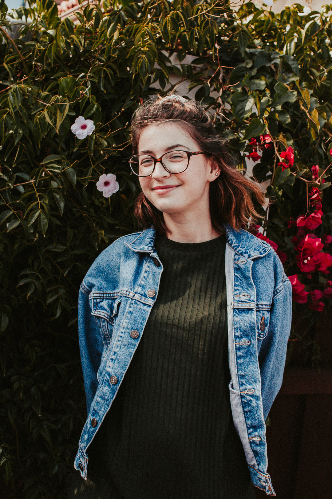

Through design, my goal is to continue exploring what people respond to and why they do what they do.
Currently completing a UX/UI Design course from University of California, Irvine and will be graduating in March of 2020. I come originally from a theater and performance background graduating with my BA in Drama with an Acting Emphasis in June 2018.
My empathetic nature and interest in the psychology of humans helped me see the importance of research and knowing the user when designing. My background in theater and performance allows me to delve deeply into the mind of the user. From that, I strive to find solutions for both what the client and the user are looking for.
I am constantly discovering new designs and finding inspiration around me to better myself. Being knowledgable in Adobe XD allows me to bring the designs to life. I want to continue to expand my knowledge for different design tools and styles. There is so much to learn and explore, there is no reason to not be constantly in a state of curiosity.